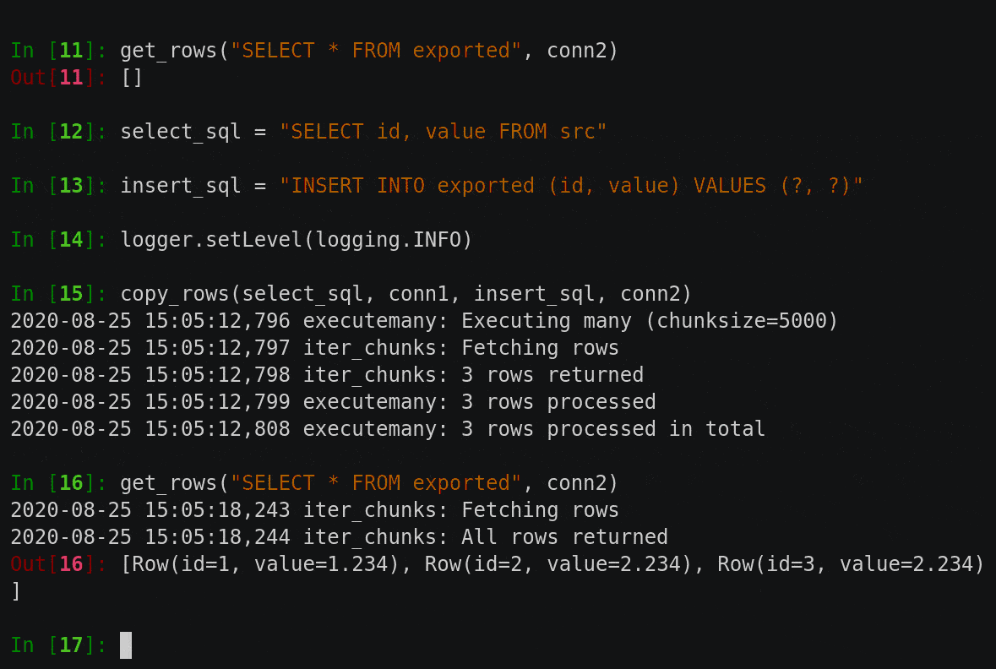

How many Postgres is too many?
An infrastructure-as-code approach to PostgreSQL-backed IoT sensor data sharing
Dr John A Stevenson / @volcan01010
About BGS
"Our mission is to provide impartial and independent geoscience advice and data."
- Work with academics, governments, industry and the public
- Digital division has 10 years of making digital data available e.g. via OneGeology and OpenGeoscience Portal and contributions to standards for data sharing e.g. GeoSciML
BGS IT Infrastructure
- Self-hosted virtual machines running on premises
- Long-standing corporate Oracle database
- Increasing use of PostgreSQL for microservices and collaborative projects
Running PostgreSQL in Docker
- Images as small as 150 Mb, spin up in seconds
- Same on the server as on developer laptop
- Cluster settings are applied (e.g. pg_hba.conf) with setup scripts
- Configuration stored in /var/lib/postgres/data
services:
db:
image: .../frost-db:${FROST_DB_TAG}
...
environment:
POSTGRES_DB: frost_db
POSTGRES_USER: ${FROST_DB_USER}
POSTGRES_PASSWORD: ${FROST_DB_PASSWORD}
...
volumes:
- postgis_data:/var/lib/postgresql/data
frost:
image: .../frost-server:${FROST_API_TAG}
...
environment:
...
- persistence_db_url=jdbc:postgresql://db:5432/frost_db
- persistence_db_username=${FROST_DB_USER}
- persistence_db_password=${FROST_DB_PASSWORD}
command: ["/wait_for_postgis.sh", "catalina.sh", "run"]
depends_on:
- db
volumes:
postgis_data:
#!/bin/sh
cmd="$@"
until PGPASSWORD=${persistence_db_password} psql \
-h db -p 5432 -d frost_db -U ${persistence_db_username} \
-c '\q'; do
>&2 echo "Postgres is unavailable - sleeping"
sleep 2
done
sleep 2 # Allow another 2 seconds for it to self-configure
>&2 echo "Postgres is up - executing command"
exec $cmd
- name: Copy host_files to deployment directory
copy:
src: host_files/
dest: "{{ deploy_dir }}"
- name: Write .env file with environment variables for table creation
copy:
dest: "{{ deploy_dir }}/.env"
content: "{{ env_file_content_for_setup }}"
...
- name: Reset database
docker_compose:
project_src: "{{ deploy_dir }}"
state: absent
remove_volumes: yes
when: reset_database
- name: Call docker-compose up
docker_compose:
project_src: "{{ deploy_dir }}"
state: present
recreate: always
etlhelper is a Python library to simplify data transfer between databases https://github.com/BritishGeologicalSurvey/etlhelper
services:
db:
image: .../frost-db:${FROST_DB_TAG}
...
environment:
POSTGRES_DB: frost_db
POSTGRES_USER: ${FROST_DB_USER}
POSTGRES_PASSWORD: ${FROST_DB_PASSWORD}
...
command: ["postgres", "-c", "logging_collector=on", "-c", "log_destination=csvlog",
"-c", "log_filename=postgresql"]
volumes:
- postgis_data:/var/lib/postgresql/data
volumes:
postgis_data:
./db/migrations/
├── common
│ ├── V001__Create_jobs_table.sql
│ ├── V002__Create_job_stats_table.sql
│ ├── V003__Create_roles.sql
│ ...
│ └── V012__Log_to_table.sql
├── hwlapidev001
│ ├── flyway.conf
│ └── sql
│ ├── V005__Configure_replication.sql
│ └── V007__Configure_replication_delete_provider.sql
├── hwlapidev002
│ ├── flyway.conf
│ └── sql
│ ├── V005__Configure_replication.sql
│ └── V007__Configure_replication_delete_provider.sql
...
SELECT pglogical.create_node(
node_name := 'stage001',
dsn := 'host=xxxx port=5432 dbname=frost_db user=xxxx password=${pglogical_upd_password}');
SELECT pglogical.create_replication_set('frost_all');
SELECT pglogical.replication_set_add_table(
set_name := 'frost_public',
relation := '"DATASTREAMS"',
row_filter := ' "PROPERTIES" ->> ''publish_yn'' = ''Y'' ');
# Create database, stopping here if it already exists
if psql -U frost_db_superuser -d frost_db \
-c "CREATE DATABASE frost_db2 WITH OWNER frost_db_superuser;"
then
echo "Created database frost_db2"
else
echo "Database frost_db2 already exists"
exit 0
fi
# Copy data
echo "Copying contents and configuration from frost_db"
pg_dump -U frost_db_superuser -d frost_db > /tmp/frost_db.sql
psql -U frost_db_superuser -d frost_db2 -f /tmp/frost_db.sql
# Tidy up
rm /tmp/frost_db.sql
hosts: dev
tasks:
- name: Create frost_db2 as copy of frost_db
command: >
docker-compose exec db /bin/bash /create_frost_db2.sh
args:
chdir: "{{ deploy_dir }}"
Questions for discussion
- Is 10 PostgreSQLs too many?
- Is it common to use pglogical as part of ETL process?
- What are the pros/cons of using a database pool?
- What if we had to pay by the minute for servers?